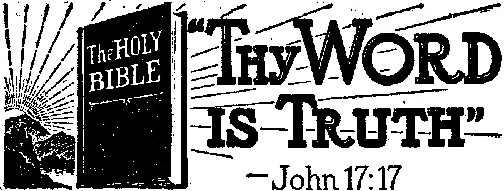
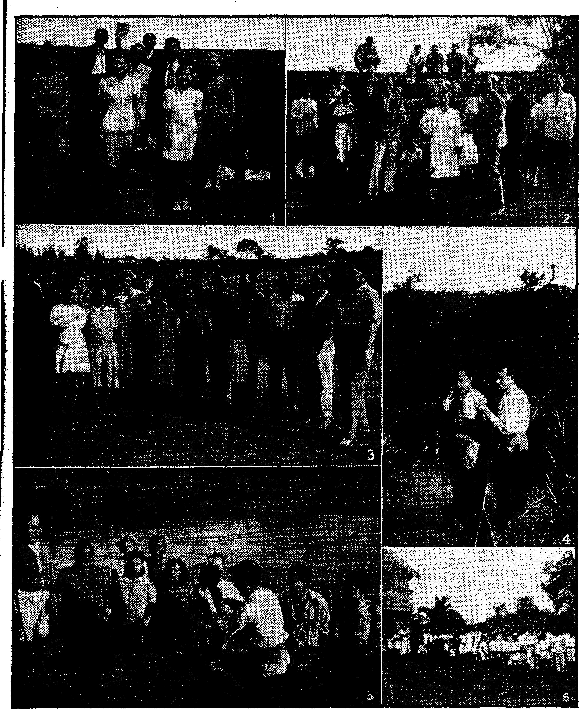

Canada Takes Another Step Toward Freedom 3
Lifts Ban on International Bible Students 3
“Thy Word Is Truth”
South Americans Want a Square Deal
Rise and Fall of Satan’s Kingdom
Is Any Man Greater than Jesus?
True Companions of the Remnant
Presenting “This Gospel of the Kingdom”
h
Published every other Wednesday by
WATCHTOWER BIBLE AND TRACT SOCIETYJNC.
117 Adams St., Brooklyn 1, N. Y., U. S. A.
OFFICERS
President N. H. Knorr
Secretary W. E. Van Amburgh
Editor Clayton J. Woodworth
. Five Cents a Copy 1
$1 a year in the United States $1.25 to Canada and all other countries
NOTICE TO SUBSCRIBERS ?
Remittances: For your own safety, remit by postal or express money order. When coin or currency is lost in the ordinary mails, there is no redress. Remittances from countries other than those named below may be made to the Brooklyn office, but only by International postal money order.
Receipt of a new or renewal subscription will be acknowledged only when requested. Notice of Expiration is sent with the journal one month before subscription expires. Please renew promptly to avoid loss of copies. Send change of address direct to us rather than to the post office. Your request should reach us at least two weeks before the date of issue with which it is to take effect. Send your old as well as the new address. Copies will not be forwarded by the post office to your new' address unless extra postage is provided by you.
Published also in Greek, Portuguese, Spanish, and Ukrainian. ‘
OFFICES FOR OTHER COUNTRIES
England 34 Craven Terrace, London, W. 2
Australia 2 Homebush Rd., Strathfield, N. S. W. South Africa 623 Boston House, Cape Town
Mexico Calzada Melchor Ocampo 71, Mexico, D.. F. Brazil Caixa Postal 1319, Rio de Janeiro
Argentina Calle Honduras 5646-48, Buenos Aires Entered as second-class matter at Brooklyn, N. Y., under the Act of March 3, 1879.
■ ■■ ■ i
Not All Preachers Are Goats
♦ I have been working Macon for a year or so. In that time I once witnessed in a barber shop in which a preacher named Sewell took issue with me. He said that the earth would burn up. In a few minutes another preacher came in and he also said that the earth will burn up. I made an offer to these two gentlemen, that I would show them the scriptures that prove it will never burn up and they would show me the scriptures to the contrary.
The preacher last named said he could not at the moment find the text in the Bible that, says that the earth will burn, but that if I would come to his house the next week he would show it to me. I went, and he found his text, but agreed with me that he had misunderstood it:
J J
so he subscribed for The Watchtower.
I then said to him, “By the way, I see your baptismal pool. How about letting Jehovah’s witnesses use it to baptize some who wish to be immersed?” He said, “That will be all right, and there will be no charges.”
To make a long story short, we used the pool three times and each time without any charge for its use. At length he found his way to our hall and just sat and listened. After the study he said, “What you people show is tough on religion, but you have the Bible to back you up.” That same week he sent for the company servant to come out and see him, and when he came he said to him, “Do you see that pool? You are welcome to use it at any time. I am now ready to be baptized in it myself. Do you see that church ? I own that building, but I am taking the denominational name off from it, and henceforth this will be our Kingdom Hall.” Next he came to a service meeting and got books and territory and began house-to-house witnessing.—Peter S. Leonard, Georgia.
CONSOLATION
“And in His name shall the nations hope.”—Matthew 12:21, A.i9. V.
Volume XXVI Brooklyn, N,Y.> Wednesday, October 11, 1944 Number 654
Canada Takes Another Step Toward Freedom
Lifts the Ban on International Bible Students Association
IT IS said that the comeback trail is a hard one. Canada is finding it so.
This hitherto champion of freedom was struck down by the totalitarian fever that swept the earth on the tide of the Hitler successes of 1940. But now’ that tide of Axis aggression has been stopped; not only stopped, it has been turned back and with a power and momentum matching that with -which it went out it now returns upon its source, with destructive retribution in its wake. In accord with and in proportion to its movement Canada has swayed to and fro. In 1940 political tools of the Roman Catholic Hierarchy goaded the nation into outlawing freedom of -worship, the freedom hated most by the intolerant Hierarchy, and the one most prized by Christian freedom-lovers. In that dark year Canada banned, among others, the following four groups or organizations: Jehovah’s witnesses; International Bible Students Association; Watch Tower Bible & Tract Society; and Watchtower Bible and Tract Society, Incorporated. Now -with the recedcnce of the totalitarian Axis tide Canada struggles back, step by step, toward freedom’s highway. What has been her. progress?
The dominion government has taken two steps along the comeback trail. They were hard steps to take, and a long time elapsed before it took them. The .first came in October of 1943. For more than three long years Jehovah’s witnesses were forbidden the right to worship God; more than this, they were even forbidden the right to exist. They were
OCTOBER 11, 1944 declared illegal by government decree, and for three years they were hounded and hunted out and persecuted because of their maintenance of integrity toward Jehovah God. The Witnesses held fast to their God-given rights of -worship despite the fires of persecution and inquisition fanned up against them by Catholic political tools and toadies.
As the majority numbers of Jehovah’s witnesses obeyed God’s commands to push on in Kingdom service, other zealous fighters for His Theocratic Government kept the issue before the House of Commons and its committees. Extensive hearings centering about Jehovah’s witnesses and their freedoms -were conducted by a Select Committee of the House of Commons, in 1942. Full and fair investigation resulted in a unanimous recommendation’s being made by this' committee that all four groups, Jehovah’s -witnesses and their three affiliated organizations, be released from their banned status. It was almost a year and a half later before the reluctant Catholic minister of justice would act, and that only after much public clamor had been raised via editorial columns and people’s columns in the nation’s press and many thousands of letters had s-wamped the desks of government officials, and after many months of extended and heated debate had raged on the floor of the House of Commons. One group’s name was taken from the banned list, namely, Jehovah’s witnesses. Canada had taken one 'step to-ward restoring freedom of worship.
3
But inasmuch as in a wave of hysteria a befuddled Canada had allowed sinister religious forces to rush her into four backward steps away from freedom, three steps still separated her from total recovery of pre-war freedom of worship. Jehovah’s witnesses continued the battle against freedom encroachments. Representations were made to the minister of justice calling upon him to carry out in completion the recommendations of the Select Committee of the House of Commons; which, you recall, unanimously cried out for the removal of the names of all four of these groups from the banned list, and not just one. His balky reply was: “It is not the intention of this department to recommend at the present time that the order in council of the 14th of October 1943 [the one lifting the ban from Jehovah’s witnesses] be enlarged.” He would not go another step farther.
Interviews were then obtained with some members of Parliament, so that the inconsistency and injustice of the government’s position (the Minister of Justice department) might be understood. Numerous letters were written to other members and to the officials in the government. To no avail. Members of the House, many of whom had in fiery tones expressed their righteous indignation against the government’s arbitrary and dictatorial policy, again rose to meet the issue. They sensed that injustice was being committed; they realized that Jehovah’s witnesses were not being given a fair deal; and they wanted to „ know why. Several debates in Parliament resulted. Quoted from one three-hour debate is the following:
Reference was made this afternoon to literature which is banned from this country because it is published by the Watchtower Bible and Tract Society of the United States. I, unfortunately perhaps, have in my possession a book which was published by that society. It is the King James Version of the
Bible. It was left with me a couple of weeks 3 i ago by one of these gentlemen who was visit-ing members of parliament. At the time I did not realize that the book was banned and I took it. My question is, What am I to do ________ r1 with it now? If I keep it I am no longer, a law-abiding citizen; I have in my possession, banned literature. If I give it to someone else I am placing that person in the position I now am* in. My religious scruples will not permit me to destroy this book, even though I am not a member of Jehovah’s witnesses. I should like the minister to tell me how I stand in this respect with the Department of Justice.
It was stated further:
The committee in 1943 recommended that the ban against Jehovah’s witnesses, the International Bible Students Association, and the Watchtower Bible and Tract Society, Inc., should be removed. There can be only one reason for the maintenance of these regulations interfering with religious bodies: that is, the safety of the state. I believe there have been some 500 prosecutions of Jehovah’s witnesses, none of which had to do with subversive activities, -the entire offence being that of belonging to an organization banned under the Defence of Canada Regulations. What excuse is there for interfering with these people receiving the Holy Bible, regardless of by whom it is published? What is there subversive in their teaching doctrines which the rest of us do not accept, as long as the practice of those doctrines does not'interfere with the safety of the state? Why is it that the recommendations of the committee of this House have not been accepted in their entirety by the minister? I ask him to deal specifically with this matter.
To these pointed comments and questions Mr. St. Laurent, the minister of justice, gave no satisfactory reply. Of course, it must be kept in mind that he is a devout Catholic and has powerful connections in Quebec city. He was not going to act. The efforts of Jehovah’s witnesses to have the committee's recommendations carried out through approach to Parliament had not borne fruit. What was to be the next step? Two
courses were open to the Witnesses: (1) Direct legal action by means of civil suit against the attorney general for Canada to ask for declaratory judgment to the effect that the regulations are ultra vires because unrelated to any war emergency; or (2) by public expression on behalf of Jehovah’s witnessed to have the International Bible Students Association’s charter and property restored, this by way of petition.
Before deciding to follow the first method, legal counsel was engaged to interview the responsible officials in the Department of Justice to the end that they might lift the ban and so avoid civil action. At the same time it was decided to launch a petition campaign without delay, and it was this part of the pincers movement against the religious enemies of liberty that pricked them into another step toward freedom. Religious intolerance was forced to bow, ■ grudgingly and ungraciously, to the will of the Canadian people. It happened as follows.
In due time the petition sheets were prepared and presented to the people of Canada. The petition read:
To the Honourable the House ok Commons of Canada in Parliament Assembled
Greetings:
The undersigned people of Canada petition you in behalf of the “International Bible Students Association of Canada”, a charitable organization by means of which F
Jehovah’s witnesses of Canada were enabled from 1925 to 1940 to carry on their Christian activities in Canada and to own property in which their headquarters were located.
Whereas the governor general in council has repealed the Order in Council which formerly banned Jehovah’s witnesses and has restored them to their proper legal status, the petition of the undersigned is that your < honourable body may be pleased to take such steps as will restore the International Bible Students Association of Canada to its former
legal status and return its property for the use and benefit of Jehovah’s witnesses.
Wherefore your petitioners, mindful of Canada’s determination to maintain for all its people the four freedoms, humbly pray that your honourable house will take all necessary steps for removal of remaining restraints against this Christian organization that freely gives the people a comforting message from the Word of Almighty God to cheer and sustain all persons of good will in this difficult time.
And as in duty bound your petitioners will ever pray.
Each petition sheet had space for twenty-five names and addresses. Activity began on June 1, and was to continue for one month. Because of unrest in political affairs, human reasoning would have directed that the work of obtaining signatures be delayed until later in the year. The Lord’s spirit, however, directed matters otherwise. Ten thousand petition workers moved forward. Police officers in many cities questioned the publishers. In some instances they seized the petition sheets. Some of the Witnesses were even forbidden to continue , in the exercise of their long-established right of petition. But the Lord’s army of Witnesses never faltered ; onward in the work marched the band of ten thousand fighters for liberty on the Canadian home front. At the very time when the Allied military forces overseas were breaking into the vaulted totalitarian “fortress of Europe” through the gates of Normandy, fighting there for the “four freedoms”, representatives of Jehovah’s new world were on the verge of a break-through against the stronghold of religion in Canada.
It was anticipated that during the month approximately a million signatures would be obtained from freedom-loving persons scattered throughout the country. The government well knew that the petition work was on, that ultimately they would be faced with the presentation of thousands upon thousands of sheets, each bearing petitioners’ request and twenty-five signatures. The government party in power also knew that many members in the House would welcome a lengthy debate on this very issue, and that the petition when presented would blast open the way for such discussion. What was the Department of Justice going to do? Face up to all this publicity, a lengthy debate in the House, loss of more prestige before the country, and the possibility of having to yield to this expression of public opinion? Or would the department be able to find some other less embarrassing way out?
A way was found, to a degree. Not the way they so fervently desired, namely, a continued flat refusal to give an inch of ground; because they did give ground, to the extent of the petitioners’ demands. But it was the.way they gave in to the popular will that showed such ill grace. They adopted a back-door method by quietly passing through an order in council. This order in council was not mentioned in the House. No public press announcement was given. It was passed on June 13. On June 16 Jehovah’s witnesses’ Canadian office was advised by legal counsel thqt the order in council had been passed three days before. The news had finally leaked out! And what was that news? The official text of the order in council reads:
His excellency the governor general in council, on the recommendation of the minister of justice, and under the authority of the War Measures Act, Chapter 206 of the Revised Statutes of Canada 1927, is pleased to amend sub-paragraph (a) of paragraph (1) of regulation 39C of the Defence of Canada Regulations (Consolidation) 1942 and it is hereby amended by deleting therefrom, the name “International Bible Students Association”.
His excellency the governor general in council, on the same recommendation and under the authority above cited, is further pleased to order and it is hereby ordered that all property, rights and interests in Canada, or the proceeds thereof, vested in, and subject to, the control and management of the custodian pursuant to the provisions of paragraph (4) of regulation 39C of the Defence of Canada Regulations (Consolidation) 1942, received from the International Bible Students Association be released to that organization.
Another step toward freedom!
• The petition work was called off; it was no longer necessary. A statement was handed to the Canadian Press Association, so that proper publicity might be given to the lifting of the ban by the order in council. The news release submitted mentioned the petition, and a copy thereof was included. Some publicity was given, but every word pertaining to the petition was deleted. The government had “saved face” by lifting the ban before the presentation of the petition and by doing so in such a quiet and unpublicized manner, and they were not going to have all this cautious effort nullified by wide publicity. ‘
Still, Canada knows. During the first two weeks the petition work had just gained momentum and full speed ahead; then the drive was called off. Yet in that opening period of activity more than 180,000 signatures were secured. As has always been the case, the Catholic Hierarchy opposes any freedom for the people. When this work started in Montreal priests from their pulpits warned their flocks not to sign. Not content therewith, many of these black-garbed prison-keepers went just ahead of the one with the petition and threatened any who might sign. The priest-ridden ones were cowed and afraid to sign; bat many, indignant at the injustices heaped upon the Witnesses, not only signed but also took blank petition sheets and secured additional names. Surely an imposing pile of petition sheets would have been filled to greet the government at th$ close of the campaign! Though unfinished, the petition activity accomplished a marvelous work in Canada: it further divided the people, and was
I instrumental in the removal of the ball. —Matthew 25:31-46.
I With the lifting of the ban on the I International Bible Students Associa-I tion Jehovah’s witnesses were indirectly I notified that they could take over their | headquarters property. This turned out I to be conditional. They must accept the I Salvation Army as tenants^ the alien I custodian having leased the property to I them. Their tenancy does not expire I until the end of February, 1945. Interviews with the Salvation Army officials | to see if they would find other premises r so that Jehovah’s witnesses might i occupy their own property and carry on the essential work of free education found little response. In fact, they appeared determined to continue until the lease expires, and even stated that they wish to retain the property until the war ends, and intimated that in view of I the fact that they are doing war work ; they could apply for expropriation.
Negotiations are continuing with the alien custodian to insure the evacuation of the Salvation Army when the present lease ends, and, if possible, to effect their removal before that time.
But this is merely a temporary obstacle in the path. Jehovah has blessed His servants with another triumph over totalitarian encroachments and influences. The ban has been lifted from the International Bible Students Association. What does this victory mean as far as free worship for Jehovah’s witnesses is concerned? It means that the property of God’s servants in that country, which property was held under the name of the International Bible Students Association, can now be returned to them and used in the gospelpreaching work. It means that the charter has been restored for the pursuit of the activities therein outlined; that Jehovah’s witnesses now have a recognized legal organization, a body organized under the laws of Canada, through which to carry on the work in that country. It restores the organized and efficient operation that the Witnesses were deprived of to some extent during the oppressive years of the ban’s reign. Greater unity of action in gospel preaching will be realized.
Canada has taken another step toward restoring freedom of worship. The first, the lifting of the ban on Jehovah’s witnesses, took her more than three years to make. This second step took a comparatively short eight months after that. She is gaining strength. It is to be hoped that she continues to move along the comeback trail with everquickening pace, and that in the near future she will delete from the list of banned groups the two remaining Watchtower organizations. Then the Dominion of Canada will have fully restored to thousands of her law-abiding citizens their most precious heritage, the freedom to worship their Creator according to the dictates of their own conscience.
HE Grand Coulee dam, on the Columbia river, in the state df Washington, 90 miles west of Spokane, is the southwestern end of a lake 151 miles long stretching to the Canadian border. The width of this man-made lake (longest such in the world) varies from 4 miles down to 2,000 feet. Eleven towns were moved to make way for the rising waters. Bridges and railway lines were relocated. Over the crest of the spillway pours a sheet of water 1,650 feet wide and 356 feet high. This is 600 feet wider than the American falls at Niagara and more than twice as high. It is about the same height as the Victoria Falls of the Zambezi river in South Africa, and carries four times as much water. Stated in terms of man-made cities, the dam is 35 stories high and nine blocks wide.
RAZIL’S place in paradise will be a big place; it could not be anything else. Following Russia, China, and Canada, it is the fourth-largest country in the world. It is equal to a United States provided with two states of Texas instead of one. It occupies 47 percent of the entire South American continent. A brief description of it is that it consists of two great river basins, the Amazon in the north and the La Plata in the south, and a vast highland region which stretches from the Atlantic ocean to Bolivia, which highland region is the real Brazil, and which now has but a small fraction of the people for whom it could provide every comfort and every luxury. So healthful is this highland region, 1,000 to 3,000 feet above sea level, that the government has set aside 5,560 square miles in the state of Goyaz for the future capital of the republic. For a detailed description of this part of Brazil see the article “Goyaz, One of Earth’s Treasure-Houses”, which was published in Consolation No. 511, issue of April 19, 1939.
Brazil was discovered in the year 1500 by Vicente Pinzon, a companion of Columbus. The name Brazil means ‘land of red dyewood’, one of the early exports. The early explorers were looking for gold and had no conception of the value of the land. For three hundred years Brazil was a lightly esteemed and much neglected portion of the Creator’s gift to mankind.
Brazil’s mountains are along the Atlantic seaboard, and three-fourths of the 41,560,147 population is concentrated within a hundred miles of the coast. The coast range follows the ocean shore for a thousand miles and even to this day is crossed by but two standard-gauge railways, one of which has to use cables to make the ascent. If the entire republic were as thickly populated as the state of Rio de Janeiro, the total population of
Brazil would exceed 400,000,000. On the other hand, the three states of Amazonas, Matto Grosso and Para, occupying the Amazon basin, comprise over half of the area of the country, yet contain only one-twentieth of the population. Students of the subject claim that the only way in which the Amazon basin can be tamed and kept Cultivated is for hundreds of millions of human creatures to live there and eat the fruits and other foods that it produces.
*
There is a good variety of climate in Brazil, depending upon the place where one lives. For the most part, the rainy season begins in September or October, bringing with it the time of plenty. Six months later the dry season sets in, and there are some sections that are at times so dry that the people have to flee until the rains return. In southern Brazil frosts occur from June to September. Parts of Brazil are as far south of the equator as North Carolina and South Carolina are north of it.
The population is estimated to be 2.2 percent pure Indian, found only in the interior; 15.5 percent mestizos, 37.2 percent Negroes -and mulattoes, and 44.4 percent whites, the latter being mostly Portuguese and Italians. Of the Negroes it is claimed that about 2,000,000 are full-blooded descendants of the 12,000,-000 slaves brought from Africa during the first four centuries after Brazil was discovered. The southernmost states are inhabited almost entirely by whites. The language is Portuguese.
A not very recent count of the foreign-born population disclosed that there were 558,405 Italians, 433,575 Portuguese, 219,142 Spaniards, and 52,870 Germans. Nothing in these figures indicates any serious immigrant problem, and it is doubtful if any such problem has arisen. Brazil is too big and too much in need of men and women workers in all lines to have immigration problems.
The death rate is one of the highest in the world. In Rio de Janeiro, where the standard of living is higher than in other parts of the country, 233 out of 1,000 children die before they are a year old. It is reasonable that one of the causes for this is that the 146 huge plantations, with an average of 148,000 acres each, have too much to say about how the country should be run. Like Fascists elsewhere, this class want the country run for themselves, not for the common people. American exporters have estimated that only 4 percent of the Brazilian people, or about 193,000, can afford to buy imported products.
There is a high tuberculosis death rate, showing that many do not know how to eat apd how to breathe. There are about 35,000 lepers in the country, a. very large number, indicating that habits of cleanliness could be improved. This statement is true everywhere, but is especially true in -the tropics. The marriage rate is one of the lowest in the world, averaging less than four marriages per year per thousand of the population. Divorces are forbidden. In Brazil those who are married are married for life.
Brazil has laws regulating prostitution, but ostentatious brothels abound in Rio de Janeiro and prostitutes come there from everywhere. A memorandum prepared by the medical officer of health of that city listed 1,685 as then residing there, of whom 987 were Brazilians, 158 were Russians, 148 were French, 144 were Poles, and 69 were Portuguese.
Education is badly needed everywhere on the planet, but it is especially needed in Brazil. In 1872 the proportion of illiteracy among persons over 15 years of age was 79.1 percent. Forty-eight years later, i.e., in 1920, it was still 64.9 percent. In 1932 it was 52.1 percent, and in 1940 it was believed to be less than 50 percent. But all these figures are bad. President Vargas has set forth Brazil’s educational problem as follows:
Out of 1,000 Brazilians who should properly receive elementary school education, 513 do not enter school, and of the remaining 487, some 110 register but do not come to classes; 178 attend the first year without learning to read well; 85 finish the second year and become superficially literate; 84 go a little further but do not manage to conclude their studies; and barely 30 get the full common elementary instruction, which is of very unequal value and admittedly deficient as to the thoroughness of the teaching, and which usually does not extend over three years, with all the pedagogical gaps which characterize the great majority of schools in the interior.
In 1940 there were in Brazil 43,500 schools, with an estimated attendance of 3,400,000 pupils. With the outbreak of the war the Brazilian government closed 2,000 schools that did not employ Portuguese teachers. The four universities are well placed at Rio de Janeiro, Bello Horizonte, Sao Paulo and Porto Alegre, and there are 213 colleges, 718 high schools and 3,283 other schools. So education is looking up.
Catholic church papers, for example the London Catholic Herald of August 28, 1942, put the religious situation like this: '
Brazil has a population of some 44 millions, the great majority of whom are Catholics at least by profession. A good many, however, are recognized to be merely nominal Catholics. Though church and state were separated in 1891, the constitution decreeing that no religion may be either subsidized or molested, the country remains Catholic in spirit. Religious associations may hold property, Church property is exempt from taxation, and there is no divorce a vinculo [from the marriage tie]. Brazil sends an ambassador to the Holy See and a papal nuncio resides in Rio de Janeiro.
President Vargas is not a Catholic; this also on the authority of Monsignor Joachim Nabuco, National Catholic
Welfare Conference correspondent in Rio de Janeiro, published in the Brooklyn Tablet of December 4, 1937. Official statistics show 646 Protestant churches and 167,457 members in 1935. This is not many for so great a country, but they help support the proposition that freedom of worship is guaranteed and that complete religious toleration prevails. Yet the experiences of Jehovah’s witnesses in Brazil show that never, at any time, do the big religionists tolerate the activities of any who undertake to teach the Bible truths to the common people.
Dr. Getulio Vargas, or General Getu-lio Vargas (he has both titles), was president of the state of Rio Grande do Sul, the, cattle-raising state, in the year 1929. At that time he announced his candidacy for president of Brazil on the Liberal ticket. When the elections came off he received 700,000 votes, while his Conservative opponent, Dr. Julio Prestes, received 1,100,000. That was a few too many. Dr. Vargas said the ballot boxes had been stuffed, so he started north with 80,000 cowboys to see about it. The usual thing happened. The military junta at Rio de Janeiro grabbed the government and wired General Vargas to come on up to Rio and make himself at home, and he did. On the way up, the people stayed up all night just to see the train pass. They hoped Vargas would come out on the platform and say something, and he did. It was just a triumphal march. He is a typical Theodore Roosevelt politician.
Since he got in power (and it is now more than thirteen years) Vargas fias shown that he is no ordinary politician. These are some of the changes he has made: He abolished parliament, changing it to two hand-picked consultative bodies that do what they are told; he created an eleven-man supreme court, but he can nullify its decisions; he created a council of national economy which regulates industry, agriculture/ commerce, transport and banking, and he can dismiss it when he pleases; he wiped out Paraguay’s 71-year-old debt, establishing good feelings with the most warlike nation in South America; he encouraged the building of railroads and steel plants; he prohibited foreign ownership in banks, newspapers and insurance companies; he gave himself the power to make treaties, valid without ratification; he gave himself the right to succeed himself or to nominate his successor, and he claims that he is not a Fascist, but that he is a true Brazilian. He has been close to the United States in his policies. Efforts have been made to kill him, but, though he is only five feet four inches tall, he seems to have unlimited courage, and to be able to take care of himself in every emergency.
Under the constitution now in project aspirants for the office of president must be native-born Brazilians at least 35 years of age. The parliament consists of a chamber of deputies and a federal council. Members of the chamber of deputies are elected by electoral boards in the municipalities and serve four-year terms. The federal council comprises one representative for each of the twenty states, chosen by its .legislative assembly for a six-year term, and ten members appointed by the president. Suffrage is extended to all men and women 18 years of age. The president is elected by direct suffrage for a term of four years and (theoretically) may not succeed himself.
Growing in population at the rate of a million a year, Brazil shows the vigor of youth. The work week in cotton factories is restricted to 48 hours. Women receive equal pay with men for doing the same work, and they are forbidden to work between 10 p.m. and 5 a.m. Payment of 25 percent to 75 percent additional must be made for overtime. Each employee who has worked a year is
entitled to fifteen days’ vacation with pay. There is a social security or pension law for industrial workers. Two-thirds of the employees of a foreign concern must be Brazilians. Companies employing more than 500 -workers must have medical clinics, rest rooms, and cafeterias. After Vargas had been in power two years he established a law compelling all business establishments to close their doors between 11 : 30 a.m. and 1: 30 p.m. He intended well, hut it was too much of a good thing and was modified. Storekeepers lost business, and especially the restaurant keepers; everybody went home.
At one and the same time Brazil wanted thirty warships and demanded phonetic spelling. To promote homesteading it made and still makes marriage loans, the repayments of "which are spread over twenty years. There is a reduction of 10 percent upon the birth of each child, and when the child is 10 years of age there is a further reduction of 10 percent if the parents can give proof that the child is receiving proper care and education. All newspapers and periodicals published in Brazil hereafter must be in the Portuguese language.
Oswaldo Aranha, foreign minister of the Vargas government, provided this explanation of the foregoing and other phenomena:
To ask us at present to conduct our democratic political development by a process of free elections and an uncensored press precisely as you do in the United States is a good deal like asking a newspaperman why he does not live on the scale of John D. Rockefeller. We have here a national income of less than $30 per capita per year, in comparison with your per capita income of $500; we have an overwhelming problem of organizing the tropical frontier of a country of enormously variegated regions, and we have an overwhelming problem of illiteracy. Therefore, to organize Brazil democratically we have to put a man like Getulio Vargas as the head of the State, one who is capable of administering our affairs and, above all, temperamentally in tune with Brazilian democracy and its aspirations. When we get him there, it is necessary to keep him there, and the changes we have gone through constitutionally of late have been aimed simply at that, at keeping in power a man through whom we can advance.
Supporting some of these statements of Senor Aranha are the facts that in industrial centers the -workers usually get but five cents an hour compensation and in the interior it is often only three cents an hour or even two cents. Most Brazilian machinery is secondhand, badly-worn equipment discarded from factories in the United States and Britain. Moreover, Brazilian -workers operate only about 25 percent of the equipment run by a U. S. worker.
No excuse can be offered by anybody for the stories of Viscount Hastings of Britain that his wife and sister, accidentally arrested and imprisoned, saw men and women beaten into insensibility and tortured by having iron nails driven underneath the fingernails. Brazilian women have testified that it is a common thing for women and young girls to be stripped and flogged, and men to have the fingernails torn'out one by one. All this might be expected from persons who believe the devilish doctrine of “purgatory”, or the still more devilish doctrine of “eternal torture”, but it ill cornports with political efforts to uplift the common people, and, if still practiced, Vargas should stop it instanter. ■
The story told by the Hastings women is supported by a protest issued by the “Foreign Department” of the New York Daily Worker, November 1.6, 1943. The document asserts that Luis Carlos Urestes has been kept in solitary confinement for seven years, and in utter idleness, and pleads that he be given the human treatment -which ought properly to be extended to every person deprived of liberty.
In the story on “Goyaz, One of Earth’s Treasure-Houses”, already mentioned, there is an account of the operation of the religious racket which curses this otherwise progressive country:
In Goyaz, as in other places in Brazil where the Catholic priests hold sway, there are several localities where yearly festivals are held, dedicated to some of the many “saints” of their own invention. According to the fame and material resources, a larger or smaller structure is built, erroneously called a “church”, where all the images, candles, crucifixes and other gewgaws are kept. To make the business pay well, pilgrims must be attracted; so the rumor is spread relating the great - healing powers attributed to that special “saint” whose name is given to the church and town. Wonderful stories are told of persons’ arriving there in the last stages of some \ dangerous or incurable disease and being suddenly cured by repeating a prayer before the image or by using some “Agua Benta”, that is, water “blessed” by the Catholic priest. So the fame spreads far and wide.
Before a certain day set for the opening of festivities, which sometimes last from eight to fifteen days, people begin to arrive from every direction, some taking more than a month to make the trip. They come on foot, and on horseback, but most of them travel in oxcarts, covered with dried raw hides, like the old-time covered wagons used en route to the California gold fields before the railroads were built. Some come in* simple faith to fulfill a promise made to one of the “saints” during the year; others, for curiosity; but most of them come to make money by trading and gambling.
Temporary sheds, covered with palm leaves and tents are set up all around the “church”; among these gambling stands are in evidence, as all kinds of betting are allowed. The people require food; so some fix up stands to sell coffee, bread, sandwiches, hot dogs, rum, etc. Temporary barber shops are plentiful; trinkets, toys, cosmetics. and articles of wear of every description are spread on tables or on the ground, all trying to make the best of^the opportunity to make their racket pajl the most. But the main racket is in the hands 1 of the priests, who make themselves con- | spicuous, moving among the crowds, dressed $ I in black gowns, red socks and queer three- j cornered hats, ever ready and waiting to ' receive the presents of every description and sums of money offered to the “saint”, from poor to rich.
So between the pickpockets, gamblers, and the priests, the poor ignorant people are robbed of their hard-earned savings during the year; but the pope’s agents generally get the lion’s share of the rake-off. Naturally the main attraction of the show is the procession. Two lines of little girls take the lead, dressed in \Vhite, with wings on their shoulders to appear as angels; then come several images, each one supported on poles, carried on the shoulders of four men; next the chief priest walking with solemn stride, with his eyes fixed on a little book held in his hand; a silver crucifix hangs below his waist, suspended by a cord around his neck; a yellow canopy with gold embroidery is carried over his head, attached to poles held by four lackies l“ walking at his side; then come other priests with sedate faces, followed by the brass band playing an anthem in a subdued and measured tone; next come two files of men dressed in purple mother-hubbards, carrying lighted candles in their hands; then in the rear the people follow in a solid mass, all trying to keep as near as possible to the main actor in the show.
The procession follows a certain route around the church square or through the streets of the town, all looking as grave as possible. Then as the -parade returns and the images begin entering the church door, the bells start ringing, dozens of skyrockets shoot up, each one carrying three bombs which explode high in the air, and at short intervals larger bombs fixed to a frame in front of the church fall as the fire releases them and burst with a loud report equal to a cannon. As the people enter the door each one makes the sign of the cross. On the last day of the festa an auction is held, at which most of the presents offered to the “saint” are sold to the highest bidder. This is a great source of i revenue for the “church”. It is strange to see the variety of articles that are offered: from a yoke of oxen down to cakes, bordered cushions and towels, etc. At one of these f
heathen feasts held yearly it was estimated that about 5,000 oxcarts were seen at a place called “Agua Suja”, that is, Dirty Water.
Brazilhas 512 landing fields for airplanes, but it is far behind the times in what is and has always been its principal industry, agriculture. It is officially estimated that 70 percent of all Brazilian workers are engaged in agricultural and pastoral pursuits, but the methods chiefly used are antique. Production is capable of immense expansion, as only a small percentage of Brazil’s vast acreage is barren or waste land, and only 4 percent is at this time under cultivation.
Brazil is a land of rivers. Between them are “campos” or open pasture lands. Following the main streams is a border of dense forest where the land is very fertile and productive; and here the majority of the people live and raise their crops. Farming is still carried on in a primitive manner. The underbrush and vines are cut with a blade about two inches wide and seven or eight in length, with a curved point, fixed to a handle four feet long; then the large trees are felled with the ax. This is done in the dry season. After two or three months the field is set on fire and all this mass of leaves, branches, creepers, etc., is burned, leaving a thick layer of ashes, and only the large trunks remaining; but these either rot, in a few years, or are reduced to ashes by succeeding fires. The day after the “conflagration” the farmer begins planting his field. With the corner of the hoe he digs a shallow hole, into which a few grains of corn, rice or beans are dropped, and covers them with his foot. Generally one hoeing out is sufficient to keep down the sprouts and weeds until harvest. The majority of the crops are still cultivated in this primitive style, and most of them are eaten where they are grown.
But when it comes to raising coffee Brazil has the world at its feet. For the last one hundred years it has been the world’s greatest producer and exporter. The climate and the rich red earth of the state of Sao Paulo have been found to be particularly suited to' the growth of the coffee tree. Two-thirds of the coffee production comes from that one state alone.
The following are now the world’s principal coffee-producing states, and the production in millions of pounds is shown for each of the states for the year 1927;
Brazil 1,995 Guatemala 96
Colombia 326 Haiti 79
Venezuela 165 Mexico 47
Dutch E. Indies 153 Nicaragua 40 Salvador . 110 Costa Rica 36
In a vain effort to keep up coffee prices millions of bags of Brazilian coffee have been burned, but the only effect was to encourage increased production elsewhere, as any political economist could have foreseen. *
Cotton ranks next to coffee as the most important Brazilian crop. From the viewpoint of soil, and climate, the Brazilian cotton crop is capable of great expansion. Brazil is the world’s second-largest producer of cacao, the bean from which cocoa is obtained. More than 90 percent of the crop is produced in the state of Bahia, and goes to the world through the port of . Sao Salvador. Brazil ranks third among the riceproducing countries. Corn, wheat, mah-dioca, tobacco and beans are important crops. Brazil ranks next after the United States as a world producer of oranges. California’s navel oranges came from Brazil. The southern plateau of Brazil produces all the cereals and fruits of the temperate zones. Pineapples, guavas, lemons, melons and grapes are grown, and 72,000,000 bunches of bananas. And there is no end of limes,
mangoes, papayas, sapodillas, peaches, figs, mulberries, quinces, avocados, geni-paps, and scores of other fruits even the names of which have not yet appeared in English dictionaries, but are described by correspondents of Consolation as marvelous gifts of the Creator of every good and perfect gift.
The forest area of Brazil, set at 1,000,000,000 acres, is, next to Asiatic Russia, the largest in the world. It*is larger than all the forests of Europe put together, or than al! the forests of Africa put together, and, omitting Canada, it is larger than all the forests of North America and Central America put together. It has almost but not quite half of all the forest area of South America. Nevertheless, though the total forest area is so prodigious, there are many countries which,' in proportion to their area, have more in forests. Brazil has 47.5 percent, but the following countries have the amounts stated:
Philippines 50.0 Malay Peninsula 67.2
Trinidad and Santo Domingo 77.0
1
Guatemala 65.0 French Guiana 98.0
It would take a book to describe all the marvelous palms that grow in . Brazil, but mention must be made of three, the babassu, the carnauba and the tucuma. The babassu grows everywhere; it has been estimated that 5,000,000,000 are now standing in Brazil. The graceful leaves are often ten feet wide and twenty-five feet long. There are 200 to 300 cocos in each cluster, and from two to six clusters on a tree. The oil from the kernels is used in the manufacture^ of soap, lubricants, edible fats, etc. It4 provides a vegetable butter considered’ better than that from cow’s milk; it?-gives a combustible oil of first quality for internal-combustion motors; it is superior to kerosene oil ; the shells produce more calories than mineral oil, therefore making an excellent combustible for railway locomotives. Other industrial products obtained from the shells and kernels of the babassu nuts are tar, acetic acid, methylated alcohol, and cattle fodder.
Carnauba wax is one of the many products that come from the carnauba palm (sometimes called “tree of life”). It is of the Creator’s masterpieces. The trunk is used for props, bridge pillars, beams, fence posts, and telegraph poles. Its leaves provide roofings for farmhouses and sheds, and fiber for the manufacture of ropes, mats, fans, straw hats, bags, hammocks, horse blankets, brushes, and brooms. The seeds when roasted yield oil and a substitute ,for coffee. The roots burned to ashes produce salt. But the wax is by far the most important of its products. Extracted from the leaves, it is used for making candles and the manufacture of lubricating oils and soaps, for polishing wood and in the preparation of hides and footwear. It is used for electric insulation and especially for phonograph records.
The tucuma palm provides a fiber much stronger than linen, and is used for making fishlines, nets, bowstrings, hammocks, and light articles requiring strength and fineness. It bears several bunches a year of dark-brown varnished nuts, about the size and shape of an egg. Between the outer shell and the kernel there is a soft white mass, which can be made into a tasty and nutritious sweetmeat. Some of these bunches weigh 120 pounds.
There are 5,000,000,000,000 board feet of hardwood in Brazil. There is a manufacturer of hardwood tables in Grand
iRapids, Michigan, who buys mahogany logs in the heart of the Amazon jungle, ; ships them 2,500 miles down the rivers to the ocean, then up the* St. Lawrence : and the Great Lakes to a port almost at the back door of his factory. Prob-
ably the time will come when every
family in the world can have a mahogany table, if they wish, made from wood
grown in the Amazon basin. .
Until 1910 Brazil was the world’s
principal source of rubber, and still has ; about 300,000,000 native rubber trees.
These are scattered over more than 1,000,000 square miles, but are again ; being tapped. Additionally, the Ford
Motor Company has about 5,000 acres of rubber trees on the Tapajos river > near where it flows into the Amazon.
i Once a great rubber producer, Brazil i lost her rubber trade to the cheaper Ma, layan producers. However, the war is bringing a comeback, and Uncle Sam has put up enough money so that the Amazon rubber workers can be sure of a decent livelihood for the hard and dangerous work which they do. The country was expected to show an annual yield of 100,000 tons when the new sys-tern of payments got well under way, and it is probably doing so by now.
Time and space forbid to tell of other Brazilian forest products, such as rosewood, violetwood, kingwood, calabashes, tonka beans (for flavoring tobacco), sarsaparilla, copaiba, guarana, castor beans, coca (from which cocaine is derived), ipecacuanha, cassava (from which tapioca is derived), arnotto (for coloring butter, cheese, and varnish), kapok seeds (for stuffing pillows), and Brazil nuts (a sure cure for seasickness). Brazil nuts can be taken out of the big enclosing shell in which they grow, but no man is eleven enough to put them back in.
4
And Now About the Amazon
Brazil is a land of rivers. The Amazon, the chief artery of trade and travel, is the largest in the world, and is exceeded
OCTOBER 11, 1944
in' length only by the Nile and the Missouri-Mississippi. The Amazon itself is navigable for 1,700 miles, which is the extent of its course in Brazilian territory. It has tributaries that are navigable for another 14,114 miles, and, for good measure, Brazil has other streams that are navigable for yet an additional 11,504 miles; so, altogether, this one country has .27,318 miles of navigable streams. The average depth of the Amazon in the height of the rainy season is 120 feet, with a breadth of 4 to 6 miles. It rises from November to June and then falls until the end of October. The trade winds, which blow up the Amazon with much force, moderate the heat and make healthful most of the settlements on the river itself.
About one-third of the Amazon basin is covered with dense forests, the principal portions of which are as yet unexplored. Scattered among the forests are open tracts, llanos, that will yet be the homes of millions of people. At present large areas in the Amazon basin average less than two persons per square mile. The Amazon forests are jumbled together in the most tangled confusion; there is no time for leaf-fall and flowering; there are few soft woods; many of the trees have prop-roots; there is a long distance between the forest floor and the first branches of the trees, and there is an absence of great masses of floral color. The need of human caretakers is everywhere apparent.
There are but few large mammals in the Amazon valley, and none of them will attack man unprovoked. The capybara, the world’s largest rat, gets to be four feet long. There are two species of peccary (wild hog), five species of armadillos, three of anteaters, two of sloths, four of deer, and three of opossum. There are bats by the million, and they include the blood-sucking vampires, which make good reading matter for the Sunday newspapers, but nobody in Brazil is afraid of them.
15
CANNOT priest or clergyman of some religious organization call a sinner to become a part of the kingdom of God and then choose him for that purpose? Neither a pontiff wearing a triplecrowned tiara and flaunting a flag with a two-key emblem, nor any other religious clergyman, possesses any such power or authority. The Scriptures alone must be the guide as to how those are called and chosen. The only way for sinners to come to God is through Jesus Christ. “Jesus saith unto him, I am the way, and the truth, and the life: no man cometh unto the Father, but by me.” (John 14:6) The order pointed out by the Scriptures, of coming to God through Christ Jesus, is (a) knowledge, (b) faith, (c) consecration, and (d) justification.
Faith means to know the Word of God, and then to rely upon it. Therefore knowledge must precede faith. “So then faith cometh by hearing, and hearing by the word of God.” (Romans 10:17) From the Word of God man learns that he was born a sinner, that there is no other name given under heaven whereby he can come at all into harmony with God, except through Jesus Christ. He learns that Jesus died on the tree, and ■ that whosoever believes upon Him might not perish but have an opportunity for life everlasting.—John 3:16, 17.
Coming to a knowledge of this, man is thereby drawn to Jesus, learns that Jesus is his Redeemer and that to please God he must follow the direction that the Lord Jesus points out. The one thus seeking the Lord God must now exercise faith; and the first thing of importance is to believe Jehovah exists, and that He rewards those who diligently seek Him. ’ (Hebrews 11:6) To such Jesus says: : “If any man will come after me, let him i deny himself, and take up his cross [his stake of reproach], and follow me.” —Matthew 16:24.
Self-denial means a willingness to completely surrender oneself to God, agreeing to do His will, while trusting in the merit of Christ Jesus’ sacrifice. That is consecration, and is what Jesus did when He appeared at the Jordan river for baptism, saying: “I come to do thy will, 0 my God.” This is an agreement that thereafter the will of the man will be exercised in harmony with God’s will, and that he will use his mind and learn God’s will and then do it.
Now the Lord Jesus presents the consecrated one to Jehovah. It is Jehovah God who judicially determines whether the one thus presented is right or- not. Being made right with God is justification. It therefore includes the judicial determination by Jehovah that the one thus consecrating is right. The Scriptures therefore show three separate and distinct things involved in justification: (1) faith; (2) the blood of Jesus; (3) the judicial determination by Jehovah; ‘ as it is written: “Therefore being justified by faith, we have peace with God through our Lord Jesus Christ.” “Much more then, being now justified by his blood, we shall be saved from wrath through him [Christ].”—Romans 5:1,9.
Justification, between the time of Pentecost (A.D. 33) and the completion of the Kingdom oiass under Christ Jesus, is by faith and for the purpose of enabling the one thus justified to undergo the sacrifice of all his earthly hopes and prospects, particularly his right to live on earth, to the end that he may participate in the chief resurrection and reign with Christ as a member of the Kingdom. (2 Timothy 2:11; Revelation 20:4, 6) Upon granting the consecrated one justification God begets such one by His spirit.
It is written: “Of his own will begat
he us with the word of truth, that we should be a kind of firstfruits of his creatures.” (James 1:18) All those thus begotten are spoken of as “born of God”, and they are in line for the Kingdom. The ones thus begotten are addressed by the apostle Peter in these words: “Elect according to the foreknowledge of God the Father, through sanctification of the spirit, upto obedience and sprinkling of the blood of Jesus Christ: Grace unto you, and peace, be multiplied. Blessed be the God and Father of our Lord Jesus Christ, which according to his abundant mercy hath begotten us again unto a lively hope by the resurrection of Jesus Christ from the dead, ! to an inheritance incorruptible, and un-; defiled, and that fadeth not away, j reserved in heaven for you, who are kept I by the power of God through faith unto salvation ready to be revealed in the last time.”—1 Peter 1: 2-5. I . F -
I God has promised to make such to be [ “partakers of the divine nature” pro-s vided they are faithful to their part of i the covenant with Him. God is always j faithful to His part. “According as his ! divine power hath given unto us all ! things that pertain unto life and godli-■ ness, through the knowledge of him that, ■ hath called us to glory and virtue:
whereby are given unto us exceeding great and precious promises: that by these ye might be partakers of the divine nature, having escaped the corruption that is in the world through lust.”—-2 Peter 1: 3, 4.
, The one begotten or born of God by His holy spirit is now a new creature in Christ. (2 Corinthians 5:17) His hope of life now is in the spirit realm with Christ Jesus. He is counted dead as a human creature, because his right to live as a1 human expired with God’s acceptance of his sacrifice. To him the apostle says: “Set your affection on things above, not on things on the earth. For ye are dead, and your life is hid with Christ in God.”—Cologsians 3: 2, 3.
The one now addressed must be build-ed up as a living stone in the temple of God, if he would be of the royal line and take part in the Kingdom, Because he is just beginning he is spoken of as a babe newly born. Addressing suchlike ones the apostle Peter says: “As newborn babes, desire the sincere milk of tlle word, that ye may grow thereby: if so be ye have tasted that the Lord is gracious. To whom coming, as unto a living stone, disallowed indeed of men, but chosen of God, and precious, ye also, as lively stones, are built up a spiritual house, an holy priesthood, to offer up spiritual sacrifices, acceptable to God by Jesus Christ. Wherefore also it is contained in the scripture [concerning Jesus], Behold, I lay in Sion a chief corner stone, elect, precious: and he that believeth on him shall not be confounded. Unto you therefore which believe he is precious:... ”—1 Peter 2: 2-7. ‘
To believe means to remain steadfast and faithful; and one born to the Kingdom must show his faith by what he does. “Unto you therefore which believe he is precious.” It is a precious thing to observe Christ Jesus the Chief Corner Stone of the Kingdom and to be conformed according to His way. Such begotten ones are called to follow in His steps, as He left example. (1 Peter 2:21) How? By being witnesses unto Jehovah God and His kingdom faithful unto death. Being designated as lively or living stones, to be builded up into the royal building of God, they are anointed to be His witnesses. “Now he which stablisheth us with you in Christ, and hath anointed us, is God.” (2 Corinthians 1:21) These are anointed to represent Jehovah God and the Lord Jesus Christ by boldly announcing His kingdom on earth. Those faithful to their anointing unto the death amid the reproaches of this world shall be born from the dead, in the “first resurrection”, to life in the spirit and shall be favored with an ‘abundant entrance ... into the everlasting kingdom of our Lord and Saviour Jesus Christ’.—2 Peter 1:11.
b _____________
UR hearts leaped for joy to learn of Jehovah’s provision of the Gilead Bible College for training workers for the field to help in the work in Brazil and the other Latin-American countries. It is surely a marvelous stride ahead in the unifying of the work to be done under the Greater Jephthah. There is a tremendous work to be done here. Of the twenty-two states and territories there are eight where at present no witness is being given, and in all the others there are constantly requests for more publishers. We pray that, in Jehovah’s providence, He will speedily raise up more publishers; for there is a ripe harvest.
Gasoline rationing has not in the least affected the witness work in Brazil. There is not, so far as is known, a single automobile, bicycle or other conveyance in use in our whole field. In the Amazon region all travel goes by water (rowboats and launches), and in a few isolated places horses and wagons are used to a limited extent, but many of the publishers go about as did Jesus and the apostles, on foot from place to place.
Various pioneers are following the method of concentrating on a territory, covering it again and again, making back-calls and forming companies. One brother and his family of six persons have been greatly blessed of the Lord. Remembering how a faithful pioneer several years ago called at his home leaving literature and, finding interest, called again and again until the interest of one member after another of the family led them, not only to take their stand for the Kingdom, but to enter into the full-time service, he left his own comfortable home in Sao Paulo for pioneers who could not so easily travel, and moved to the interior of the state where, in going over his territory a second time, he helped others to enter the pioneer service and has gathered together a live little company of publishers in at least two towns. More than ten of the present full-time workers were contacted and encouraged to enter the service by this brother’s faithful efforts and example.
■ Out territory, however, is so far-flung 'and there is so much of it in which no witness has yet been given that some pioneers are adopting the method of one who has been many years in the field and has overcome many handicaps, one of them being that he is a foreigner, subject to the Axis Powers. He rents a room in the center of his territory, where he receives literature and correspondence. With his phonograph strapped on his back, knapsack style, and a bag of books in each hand, he starts out on foot, witnessing as he goes. The farther he proceeds, the lighter becomes his load, naturally. As night approaches, he inquires of persons friendly to the message where in the neighborhood he can spend the night. As the Brazilians are extremely hospitable, he is usually invited to stay, sometimes to sleep in a bed, sometimes on the floor. He repays his host by playing the phonograph after supper and telling about the Kingdom.' Thus he really makes an extended back-call after having placed literature. He always carries Kingdom News and copies of A Sentinela and Consolagao for those who show interest, so that they can contact the Society for further information. Persons have thus got in touch with the organization, afterwards taking their stand on Jehovah’s side. In case there is no hospitality offered him he sleeps in the fields., After his supply of literature is exhausted he returns to his room for a short rest and study, loads up with more supplies of literature, and is off again. On rare occasions, such as Memorial and at conventions, he meets with his brethren. In
(1) Eight happy pioneers (six from one family) from the state of Sao Paulo. (2) Group in the interior of Sao Paulo hearing discourse preparatory to baptism. (3) Hearing discourse in Rio Preto preparatory to performance of the symbol. (4) Baptism in a creek in the interior’ of Sao Paulo. (5) Baptism in Rio Preto, Sao Paulo. (6) Manaquiri company of witnesses in front of Kingdom Hall.
the wilds alone he has many thrilling and dangerous experiences, but never for him has failed the precious promise of Psalm 23: “Yea, though I walk through the valley of the shadow of death, I will fear no evil; for thou art with me; thy rod and thy staff they comfort me.” His placements of literature are among the highest, as well as his number of hours in the field.
One of the most effective means of witness is that of the conventions. Jehovah blessed us with two fine assemblies, one at the Memorial season and, to crown a blessed year, the “Free Nation’s” Theocratic Assembly of Jehovah’s witnesses held in six different Brazilian cities.
The “Comfort All That Mourn” lecture and release of the booklet were of special significance, a benediction from the Giver of every good and perfect gift. The first shipment of these booklets had been lost on a torpedoed vessel. 1 As we were receiving the news of this loss, came the announcement of a second shipment under way. The vessel carrying this second shipment, trying to avoid submarines, went on a rock and nearly sank. Help arriving, the cargo was transferred to another vessel and finally arrived in port. The,cargo was in such confusion that it was some time before any was released from the customs. From day to day our dispatcher promised our shipment, but not until Tuesday morning at eight o’clock did. there arrive a few cartons of Comfort booklets, just in time for release at the afternoon discourse. The brethren were so thrilled at the release, on hearing how Jehovah had preserved the booklets and brought them to us, that they went out on the streets with them immediately, and the whole 5,000 disappeared like snow in the sun.
Instructions and supplies from Brooklyn reached the office in time to enable us to translate all the principal discourses of the North American Assembly and many of the other speeches, so that during the three days sixteen different 20
discourses were given and greatly ap-l preciated. Two of the speeches, “Morel than Conquerors” and “Safety at thel Climax of Judgment”, were printed in j the October Sentinela, the “Baptism” 1 talk in the October Consolagao, and these | two magazines were released at the con- j ventions at the close of the talks. We j printed Kingdom News No. 12, which < was- released along with the booklet < Freedom in the New World at the close : of the public lecture. The oneness of Jehovah’s great organization has been indelibly engraved on the minds of the brethren- here by the arrangements made through the visible part of the organization whereby the speeches are given in the native tongue simultaneously with the English in North America, and the booklet in Portuguese presented at the same moment as the English booklet.
The convention points were scattered, and communications, not the best in these wartimes, such that there were thrilling, almost anxious moments when it seemed as if some of the material would not reach its destination in time. But how the Lord cleared away every obstacle! The advertising was splendid. Alb the printing was done on our own press except the handbills, window cards, and signs for the information walkers. In three pities, the order for handbills was doubled. The brethren in Brazil do enter into this advertising feature of the work with a zeal that makes ' everybody “sit up and take notice”. This Assembly of Jehovah’s witnesses is being discussed from one end of Brazil to the other. Our enemies by their attempted interference only help all the more to advertise the Kingdom of Righteousness which they blindly or stubbornly oppose.
From information brought to our attention it seems the attempted interference was a concerted effort of religious intolerance. In Sao Paulo they were too sure of their ground. Things happened so fast that they didn’t have time for a counteroffensive until it was too late. The same kind lawyer who has so often befriended Jehovah’s people when they were sorely beset helped us again, made a noble defense of Jehovah’s witnesses before the local board of press and propaganda and the Department of Political and Social Order, and, when offered remuneration for his services, emphatically declined, saying, “That was. for Jehovah.” He who never forgets a kindness done for His name’s sake in behalf of the least of His little ones will richly reward in His own due i;ime and way this noble soul.
The adversary’s effort did not succeed in stopping the lecture, except in Salvador, and there the firm stand of the brethren remaining at their posts made an impressive and powerful witness.
As the persecution increases interest increases. There have been more persons immersed in the Amazon river this year than in all other sections of Brazil. At one place a pioneer found a family of sixteen, all of whom accepted the truth and entered into the service.
At the Branch office during the month of May while the Branch servant was away in Sao Paulo, the police called saying that they had come on complaint of some of our neighbors to investigate the Nazi propaganda that was being printed here. After talking with the sister in the office, who invited them to come back upon the return of the Branch servant, they stated: “We think it unnecessary to return. We have already thoroughly investigated this Society and find that it is all right.” Taking literature for his superior, the investigating • officer asked for a booklet for himself, saying that he would like to read our Bible literature. Within the past few days another visit was made to confirm and complete the former report, giving an opportunity for a thorough witness to the two officers. They listened respectfully to the points made, read paragraph after paragraph of articles in the magazines pointed out to them in answer to
their questions. Finally the spokesman said, much like Agrippa of old, “You would almost make a believer of me,” apologized for any annoyance they might have caused, and assured us that we should not be disturbed again.
Recounting the activities of a busy Kingdom year, our hearts are lifted in gratitude to Jehovah for the blessed results. There has been an increase in
J almost every phase of activity. There is more of a spirit of unity and better organization among the brethren everywhere. A great need exists, however, for capable brethren to visit the various companies and isolated publishers, and we look to the Lord to raise these up from the midst of the Brazilian brethren or to send some capable ones from other parts. The prospects ahead are for great activity among a lovable, humble, generous, hospitable people who need to be freed from the shackles of religion.
The Brazilian brethren look forward to the day when the president of the Society may visit South America. This is not because they look to a man as a leader of God’s people, but with a keen appreciation of untiring service in our behalf and love for the faithful servant whom Jehovah has appointed to direct the visible part of His organization. But whether you may come to us in the near ’ future or not, we count it a joy to stand with you, shoulder to shoulder, as Jehovah’s anointed King, conquering and to conquer, leads us on until we have finally proved “more than conquerors through him that loved us” to the complete vindication of the great and holy name of Jehovah, our God.—1944 Yearbook of Jehovah's witnesses.
South Americans Want a Square Deal r. George W. Crane reports a conversation he had with a talented South American surgeon, at a medical banquet, in which the surgeon said:
The same revolt against the church that occurred in Russia has also taken place in South America. In fact, it has reached such a point that marriages by priests or other church officials are not even legal. Only those ceremonies performed by government officials have legal standing. The church has played politics and kept the people in ignorance. It didn’t believe in letting them have mass education. Besides, it has connived with the wealthy landowners and business interests. The poor man has been downtrodden, and he feels that the church not only hasn’t helped him greatly, but that it has actually held him down in poverty and ignorance in order to dominate him that much more easily. He looks on it as a dictator. You are seeing a great social revolution going on in South America. The people are opposed to public address by anybody who talks on religion. But by religion they mean the ritualistic type to which they have been accustomed. A man may lecture about Christianity and get away with it, however, if he gives a simple, straightforward talk showing how Jesus stood
for the working man and believed in helpini educate and heal the poor.
■■ :'3i
“Reverend Father” Ambrose Graham, of New York city, now a Roman Catholic missionary in Bolivia, says that Indians in his parish have poisoned a number of traders by feeding thefti ground glass. Wonder where they learned that. Page Benvenuto Cellini.
The Southern Baptist Convention, held in Atlanta, in May, 1944, didn’t like it a little bit that when it wanted to obtain passports to enlarge its mission staffs in South America the Roman Catholic Hierarchy “with friendly encouragement from many individuals in places of authority in the United States Government” sought to slam the door in their faces, but permitted 200 young American priests to go to those same republics, and none of those 200 had any difficulty in securing passports.
The Kingdom Is at Hand"
LL the conventions of Jehovah’s people have as their theme the Kingdom for which Jesus taught His followers to pray, but the last one, with Buffalo as its key city, was triply a Kingdom convention. The key addresses were Kingdom addresses on specially Kingdom themes, such as “Seek Ye First .the Kingdom”, and “The Kingdom of God Is Nigh”. Conditions in the “Old World” and in the “New World” show that the break-up of the one and the setting-up of the other are in full swing. And the new book, with the above title, was one of the great releases. No one can read it, and look up the 946 texts which are cited, without adding greatly to his store of Kingdom truth.
It is a happifying job to read the book, and to snatch out of it, here and there, just a few, not many, of the gems observed in a first reading. Space forbids extended comment. The titles of the chapters convey a lesson in themselves: “/The Kingdom Is at Hand’,” “Testing the King’s Integrity,” “Introducing the King,” “The First Kingdom Promise,” “Theocratic Kingship,” “The Typical Theocracy,” “Theocratic Judges,” “Human King Fails,” “Covenant for the Kingdom,” “Palace of The Theocrat,” “Reigning Line Interrupted,” “Rise and Fall of Satan’s Kingdom,” “A Remnant Returns,” “The King at Hand!” “Bruising the King’s Heel,” “Keys of the Kingdom,” “The Royal Family,” “Theocracy’s Ambassadors,” “Consider the Evidence,” “Subjects of The King,” and “ ‘Jehovah Reigns’”. Out of the 21 chapters 15 are mentioned in what follows.
Chapter 2 is discussing the King’s integrity; the temptations in the wilderness have been completed. In the hour when He most needed heavenly aid, Jehovah God sent the holy , angels to give His beloved and only begotten Son the physical food which the heavenly Father knew that He needed, but:
The victory of maintaining his integrity toward his Father in the face of the most probing temptations was more sustaining than the material food now ministered to him by angels. The eternal life of the Son of God was nourished by his uncompromising obedience to the word proceeding out of the mouth of God far more than by the bread of physical nourishment provided by these heavenly messengers. [Page 28]
Though many lovers of God’s Word are aware- that Matthew gives the-genealogy of Jesus’ foster father Joseph, while Luke’s is that of Mary herself, it was a treat to have it brought out that Salathiel and Zorobabel were descendants of both Solomon and Nathan (page 40), and Joseph and Mary could each claim descent from King David and claim both of his sons as their common ancestors.
Jehovah God admits of no equal, to say nothing of Jesus’ submission to His Father even unto death; so they should read this with interest:
Only the religious trinitarians are presumptuous enough to claim, without Scripture basis, that two other persons are equal with Jehovah God; but Jesus does not himself claim to be one of such persons. For’ his humble course Jesus has been exalted even higher than he was before becoming a man, even next to God himself. If Jesus had been equal with God before being “made flesh”, then Almighty God could not have further exalted Jesus, because that would have required that Jehovah exalt Jesus higher than Jehovah himself, an impossibility and most unreasonable! [Page 50]
This too will be a hard one for them, though not if they will look about them and think of Hitler, Mussolini, and others ad infinitum:
Jehovah God is not the Founder of the kingdoms of this world nor the One responsible for them. It is a libel upon God and a reproach to His name for religious clergymen to solemnly teach that such worldly kingdoms are “ordained of*God”. [Page 53]
Still another one that will go hard for OCTOBER 11,1944
those who will not learn is the clear-cut proof that the “seed” that will bruise the serpent’s head is not Eve’s seed, nor even Mary’s seed, but the seed of Jehovah’s faithful heavenly organization, Zion, “which is the mother of us all.” [Page 61]
And it is obviously true that when Enoch prophesied of a coming cataclysm upon the world of the ungodly he was not speaking of the flood which swept the earth in the days of his great-grandson, Noah, but of the infinitely more tremendous disaster that will come upon all of this present generation that do not get into God’s organization, the ark which He has prepared to carry over those who are baptized fully into His will. [Page 66]
Parents must teach their children God’s way, but they cannot be held responsible for the choice left to the human will. It was one of Noah’s greatgrandchildren, Nimrod, that became audacious enough to defy Jehovah; and this was while Noah still lived. And, still worse, if possible, it is quite probable that Nimrod’s wife and mother, Semiramis, was one of Noah’s own grandchildren. Noah could not be blamed for these departures from the way of life, nor could Jehovah God:
He did not anoint or ordain Nimrod as the “higher powers” on earth to whom' the peoples should be subject as unto an institution representative of God’s will. [Page 73]
Although Noah lived 350 years after the flood, he had nothing to do with that newly-formed unrighteous world. He continued to be a man of faith and to walk with Jehovah God and to be a “preacher of righteousness”. Ten generations after Noah [and two years after Noah’s death—Ed.] another man of faith in the true and living God was born through the line of Shem. His name was Abram, which was later changed to Abraham, meaning "father of a multitude”. [Page 74]
As the mother of Isaac, Sarah represented, not Mary, but Jehovah’s organization above:
Isaac pictured particularly “the man Christ Jesus5*, when he was baptized at the Jordan, and the spirit descended upon him and his Father’s voice from heaven said: “This is my beloved Son, in whom I am well pleased.’’ This descent of the spirit and this acknowledgment by God before his witness John the Baptist was an instance of begetting by the heavenly Father. Then it was, indeed, that His “woman” brought forth her Seed, her Son “full of the holy spirit”. [Page 79]
And now, when everybody who knows nothing about God’s Word is mentioning how holy a certain city is that is not even once mentioned in the Scriptures, one dare smile inwardly at this sentence:
By such prophetic previews recorded in the Bible the evidence keeps on adding up that God’s promised King would be a heavenly King and that his kingdom is not to be a measly tiny “State of Vatican City”, on Italy’s boot, having diplomatic relations with kingdoms of this world. [Page 88]
Squatters Will Be Ejected
Almighty God is the owner of this world, and in His own due time He will eject from it the squatters that do not acknowledge His sovereignty. When the faithful and obedient Israelites evicted the Canaanites, they did no wrong:
This action was typical of how Jehovah God must take over the entire globe and destroy out of it all religionists and opposers, that his devoted people on earth might live under His Theocratic Government and freely worship him without molestation or hindrance dr snares. [Page 114]
The worship of the Canaanites and of the Zidonians was devil-worship. Their asherah or groves were symbols of Satan’s woman, or organization, and their god Baal was the Devil himself :
His worship was attended with moral uncleanness and with the sacrifices of living children by fire, suggestive of the religious doctrine of torments in a fiery hell or in a purgatory. In utter detestation of such religious practice Jehovah God said : “They have
■ ■ ’ - ■
built also the high places of Baal, to burn j their sons with fire for burnt offerings unto Baal, which I ‘commanded not, nor spake it, neither came it into my mind.”—Jeremiah 19:5; 7:31. [Page 161]
The four-page chronological table at the end of chapter 11 says good-bye to the whole theory of the grand jubilee of jubilees of 2,500 years’ length, and if you don’t see it now you will some time. The facts are in the table, and the table is established in God’s Word. Why borrow trouble about a human invention that was ingenious but did not work out?
That headline is stolen bodily from the new book. The religionists have tried to interpret Nebuchadnezzar’s dream, but even to this day they do not know much more about it than Nebuchadnezzar did the morning after he had it. Instead of this dream’s representing a succession of world empires,
It pictures Satan’s entire world or kosmos, composed of both the heavens and the earth which he organized since the flood, “the heavens and the earth, which are now.” (2 Peter 3:7) It is all one organization from head to foot. Its destruction means the world’s end. Satan the Devil is the golden head of the image, pretending to be divine, and ai ing to “be like the Most High”. [Page 182]
Satan’s spirit organization was broken up at the end of “the world of the ungodly’’ in the flood, but thereafter he reorganized his unclean spirits, the demons. Those who showed the greatest capabilities and aggressiveness Satan selected to form a superior or princely section of his invisible organization. [Page 184] Among such demon princes the Bible names “the prince of Persia” or “prince of the kingdom of Persia”, and “the prince of
Grecia”, as opposed to God’s mighty spirit Son, Michael, the prince over Jehovah’s people. The formation of this demon-prince organization under and subject to Satan after the flood is what is meant by the statement: “And after thee shall arise another kingdom inferior to thee.” But the “head of gold” remains on top, as chief, and the demon I princelings under Him form the 'breast and i the arms of silver5. [Page 185]
To make a well-told story very short, the 'belly and thighs of brass’ are the subsidiary demons with which Jehovah’s witnesses have a conflict rather than with men (page 186); the 'iron legs’ are the “king of the north” and the “king of the south” (page 187); and the “feet” are the politicians smeared over with religion by the clergy. Jehovah’s’ldng-dom smashes the whole organization to pieces and a great wind passes over, and it becomes like the chaff on the summer threshing floor. (Page 188)
It seems that when Jehovah Gfod wanted to announce the birth of the i Savior He knew whom to trust. It was . the shepherds, earning their living by working nights. He could not trust, the I clergy:
I Those religious dignitaries were willing to I play right into the hand of Satan the Devil. [ They used the prophecy of Micah to tip off I murder-inclined King Herod that the child for r whom the Eastern magi or stargazers were I searching was born at Bethlehem. [Page 210]
Jesus was willing to wait till God’s. [ due time before beginning His reign, i “When Jesus therefore perceived that they would come and take him by force, to make him a king, he departed again into a mountain himself alone.” (Page 215) What a contrast with other kings, past and present, or presently!
The section about Jesus and the apostles “pioneering from house to house” is too interesting and up-to-date and important to be reviewed; it must be read in the book itself, beginning on page 223, and running down through page 226. As the reader goes along with his reading and sees many familiar texts, and in each of them the words house and home and house to house put in Italics, he gets to see the big idea that God’s method of spreading His truth is just that way. It is definitely not by parades, bell-ringing, spectacles, pulpitwhining and money-begging. And if you try it once you get to be certain that the surest and best way to overcome blindness and lack of appreciation of God’s goodness is by personal house-to-house work, and that work is not done and will not be done by any other than Jehovah’s witnesses. No others are qualified by either consecration or suitable instruments of service, such as books and phonograph records; nor will they patiently conduct book studies with those that at first oppose themselves.
Would you think that any man on earth would dare proclaim, and constantly proclaim, and repeatedly and insistently claim, that he is greater than Jesus Christ? Well, the pope does just that. Jesus told His own disciples that to sit on His right hand and on His left was not His to give; only the Father would decide that; only God could or would place the members of the body as suited Him best, and so, and obviously :
This shows -that it is presumptuous for any “religious pontiff” in Italy to claim to canonize dead persons to be saints and to put them in the kingdom of heaven. [Page 235]
The malefactor impaled on a tree alongside Jesus must have understood that He would come into His kingdom by a resurrection from the dead, because all Jews, apostles included, expected that kingdom to be set up in Israel. (Acts 1:1-6) (Page 252) Actually, both the malefactor and Jesus himself went to the Bible hell (not to the theological one, which does not exist), and the thief is there yet, along with David.
The two wave loaves of the firstfruits of the wheat harvest waved before Jehovah on Pentecost showed that the remnant of Christian believers among the natural Jews would be supplemented by a remnant from among the Gentiles. The selection of this second remnant is about finished and their testing almost but not quite finished, also. (Page 266)
Is the proclamation of Jehovah’s kingdom a matter of ordinary interest? Read:
Jesus’ coming as the King Messiah the Prince, nineteen centuries ago, was of such importance that it was preceded by a forerunner, John the Baptist, specially raised up of Almighty God. This prepared a people for the arrival and appearance of the King himself. However, the coming or establishment of' the Kingdom itself in power is of the greatest importance in universal history, because the Kingdom is The Theocratic Government and by means of it the Most High God Jehovah will vindicate his great and holy name. "The kingdom of heaven” is, as the foregoing pages unite to agree, the foremost doctrine of God’s Word, the Bible. [Page 306]
Jesus has "all power... in heaven and in earth” and yet it is God’s will, and it is for the ultimate blessing of all, that even after the King rises up to take His regal office, He must fight for that which is rightly His:
The apostle’s inspired words at Hebrews h r
1:8, 9 show that Psalm 45 is addressed prophetically to Christ Jesus after his enthronement as King in 1914, This psalm makes clear that the nations of the world are not converted to Christ at the time that Jehovah’s Theocracy begins, but that the Kingdom begins in the face of opposition and must fight to put down the Seed *of the Serpent and all enemies. Mark its account of the fight, and that, after the fight begins, the marriage of the King to his tffbride” takes place. [Page 322, followed by the American Standard Version of Psalm 45:1-16, which please see. Meantime:]
"The sun” of prosperity in man’s selfish sky is becoming black as in mourning. The "moon” of man’s rule in the darkness of this world is becoming bloody with totalitarian methods. The "stars” which have bedecked i
man’s notions of the higher things and which "stars” man has looked up to to guide him through the night are proving to be false prophets. [Page 338]
Let be shocked whoever will, but it is tmj| Religion leads the rulers and peoples of thii| earth unto a clash with the King of kings/; Those who blindly follow her will be destroyed* with her. In the postwar international arrangement, when religion and her lovers are saying "Peace and safety”, then sudden destruction will strike them in the "battle of. that great day of God Almighty”. Religion will save none of them from that battle of Armageddon. In fact, the King of kings will strike confusion into the ranks of the religion-led united nations, and the political elements will turn their horns of power against the religious organization. They will find her a worn-out whore unable longer to satisfy them and serve their purposes. They will "hate the whore, and shall make her desolate and naked, and shall eat her flesh, and burn her with fire”. (Revelation 16:13-16; 17:15-18) What their fury leaves of the disorganized religious forces the King of kings will directly consume with the baptism of fiery destruction at Armageddon. [Page 348]
Jehovah’s witnesses are one people, all of one mind and of one spirit-purpose, to do the will of the Most High God:
Those of the "other sheep” do not hunt for the line of least resistance. They love righteousness and seek it now. The greatest symbol of righteousness is Jehovah’s Theocratic Government, because it is the Kingdom which
it
reproach that Satan’s organization has brought upon His name and it fights for Jehovah’s rightful universal domination. Hence the "other sheep” take their places alongside the persecuted remnant of Jehovah’s witnesses and join with them in the aggressive warfare of divine truth against all religion. They rejoice to see in the Scriptures that they were prefigured by those several hundred Israelites that joined David, the anointed one of Jehovah, while as yet he was banned and outlawed by King Saul and obliged to take refuge in cave, or forest, or wilderness. Those adherents of David were bold fighters like the valiant companions of the remnant today, fleet in God’s service and with faces filled with th6 Courage of lions, expert at handling the spiritual “weapons of our warfare”. They love the remnant with the same unbreakable love and devotion that Jonathan had for David, “passing the love of women.” They are willing, with danger to themselves, to stand up for Jehovah's anointed ones in the face of fleshly relatives and the highest authorities of the land. They are content to go down in death now, fighting faithfully against the Philistin-ian‘ religionists as Jonathan did at Mount Gilboa, for they know that an early resurrection to eternal life in the new world awaits them. [Pages 360-362, and followed by several pages of the most thrilling and comforting messages ever sent by the Almighty to his true and faithful remnant and. their companions]
The last chapter, Jehovah Reigns’,” is the anticlimax of the book. Many will doubt it, and yet—and yet “Jehovah reigns’’. And one cannot honestly read the book without becoming convinced that it' is so.
Bible Translations
in A
THERE is only one Bible. There are many different translations of that one Bible. The original Bible text in the Hebrew and Greek languages has long been lost, but ancient copies and manuscripts based upon the original have been unearthed and by Jehovah’s oversight His Word has been preserved unto this day. But the wording of its inspired passages varies with every translation, of which there are many. This opens a wide field for investigation by the careful student of God’s Word. Jehovah has mercifully revealed to human creatures His purposes concerning them and the planet upon which they live; and this He has done through the written language of His Word, the Bible. A correct understanding of its contents is essential to one consecrated to do His will.
Two general forms of language expression are contained in the Bible; namely, literal language and symbolic language. They are present in all the translations, and the student must recognize the passages to be taken in a literal sense and those whose real meaning is shrouded in symbolisms. Sometimes one particular translation will indicate that the language used is symbolic, whereas another will not make this clear. An illustration in point will be given as this article progresses, showing the advisability of consulting different translations.
A translation is the result of the carrying across of thoughts as expressed in a certain grouping of words in one language to a group of words, expressing the same thoughts, in another language. This presents immediately two necessary, requirements in translating. A dependable translator must be thoroughly conversant with both languages and he must also have the mind of the original writer in order to properly understand the true meaning of the words used.
The amanuenses of Jehovah, that is, those men of old who wrote what was dictated to them by the holy spirit, used languages governed .by rules of grammar. The fine shades of meaning of a word were determined by the relationship that word bore to other words with which it was associated in the sentence. It could mean one thing in one setting and a very different thing in another setting. From this it can be readily seen that a translator would require an accurate and extensive knowledge of the grammar of the language to be translated. This would only be the first and basic requirement. The most exacting and well-versed grammarian, on the basis of grammar alone, would not necessarily be correctly informed as to the original meaning of a word or sentence. It would require something more, something that he as a gram-
I-
marian might never possess. It would require the knowledge and understanding of the purpose in the mind of the original speaker or author.
Translators, in the main, have not had a knowledge and understanding of the purpose of Jehovah; they have not had the mind of the Lord. They have leaned Upon their own knowledge of the linguistic science of the original language; that is, their own knowledge of the meaning of the words, their historical and grammatical setting. The result is many different translations into English of the same original Hebrew and Greek Scriptures. The differences arg sometimes great enough to cause confusion.
But while the linguist may be entirely at sea, so far as a knowledge and understanding of that contained in the translation is concerned, the Theocratic minister, by the Lord’s grace, is able to perceive the truth, having the eyes of his understanding opened. He can take advantage of the accumulated findings of scholars for centuries past. With the guiding touchstone, a knowledge of the^ purposes of Jehovah, the J'heocratic^ minister can, by comparing translation' with translation, arrive at an accurate understanding of the original statements' as He has been pleased to reveal it to’ His creatures at present. Only by pursuing this course can the student be sure that he has all the information ob-
■ to- ■
tainable. Such a course is followed by those upon whom the Lord has placed the responsibility of preparing and dispensing the “meat in due season to the household of faith”. That example can be profitably followed by all Theocratic ministers desirous of attaining the fullest efficiency. Some examples of how this is done would be fitting at this point.
It is known to one serving Jehovah that a pivotal point of the drama of vindication is the bringing forth of the “seed” of promise. That “seed” is to administer the fatal blow to God’s adversary, Satan the Devil. The honest Catholic can easily be confused and held in Satan’s religious trap by reading only
PUBLISHED BY THE WATCHTOWER SOCIETY ■J. ■ .
At the world-wide United Announcers' Theocratic Assembly, August last, the Watchtower Society released the Watchtower edition of the American Standard Version of the Bible of 1901.
- *. i r ■ ' J
This version is among the most valuable of modern translations. It is printed unaltered in the Watchtower edition, in boldface type, together with all its footnotes. The Watchtower edition is the first edition to contain the helpful - 95-page cyclopedic concordance of words, names, and expressions found in the American Standard Version, and also four revised maps. The binding of this edition is flexible and of light-brown leatherette, with gold-embossed title on backbone and on front. Its overall measurements are 7f"x5|"xlf". This attractive Watchtower edition is mailed postpaid on a contribution of $1.50 per copy. ‘
" WATCHTOWER 117 Adams St Brooklyn 1, N.Y. ’ ”
■ ■ ■ ■ ■ ■ ■ . .. ■ fr.
Please mail me a copy of the Watchtower edition of the American Standard Version Bible, for which I enclose a contribution of $1.50.
Name ............................................................................................................................;______________________________________________________________
1.
Address ................................f........................—..........................................................................................................................
(Street and No., P. O. Box, or Rural Route)
City .................... ............. P. 0. Unit No. .............. State ............................................
his Catholic translation, the Douay version. True, it’s only a translation, but to him it’s the Bible : he knows no other.
___ /
The Douay translation says at Genesis ' 3:15, “I will put enmities between thee and the woman, and thy seed and her seed: she shall crush thy head, and thou shalt lie in wait for her heel.” But note that the American Standard Version Bible differs radically, stating: "he shall bruise thy head”; not she, but he. Rotherham’s translation sheds further light. It shows that the original Hebrew indicates emphasis on the word “he”; ‘'He shall crush thy head.” Additionally, this translator shows in a footnote how the application of the feminine gender to this original Hebrew word is wrong, as translated in the Latin Vulgate, from • which the Catholic Douay translation was made. But the honest Catholic might say, “You have used only translations of confessed Protestants. How do you know they • are not prejudiced?” The Theocratic minister immediately exercizes his privilege as one of God’s free-men and avails himself of any and all aids; thus he comes to a J ewish source, one that cannot be accused of being 1 Protestant. That translation introduces itself by saying “carefully translated after the best Jewish authorities”, by Isaac Leeser. Leeser says: “And I will put enmity between thee and the woman, and between thy seed and her seed; he shall bruise thy head, and thou shalt wound his heel.” With this simple comparison of translations any honest Catholic should be convinced that the entire belief of the glorifying of a woman is on a false, satanic promise.
Now go from this first book of the Bible to the last. All the precious promises of the book of Revelation are lost to many people of good-will because they fail to see that the book is symbolic. Taken literally it permits of all kinds of fantastic interpretations. But the Theocratic minister may help these honest ones by carefully comparing translation with translation. The King James version says, at Revelation 1:1: “The Revelation of Jesus Christ, which God gave unto him, to shew unto his servants things which must shortly come to pass; and he sent and signified it by his angel unto his servant John.” In the straight reading of that translation there is little to show the book is definitely symbolic, but there is a suggestion in the word “signified”. W eymouth catches the importance of that word “signified”, clarifies it somewhat, but misses the real meaning. He says: “and He sent His angel and communicated it to His servant John.” Weymouth uses the familiar word “communicated”, which immediately shows us something passed from the angel to John; but what? Did the angel merely speak words ? Did he use literal language or did he use symbolic language, illustrated? Rotherham’s translation removes all question- of doubt: “The Revelation of Jesus Christ, which God gave to him, to point out unto his servants the things which must needs come to pass with speed, and he shewed them by signs, sending through his messenger unto his servant John; who bare Xvitness as to the word of God, and the witness of Jesus Christ whatsoever things he saw.” The angel pointed out to John, showed him in signs and symbols; John saw and recorded. John both heard and saw. By this simple method of comparing one translation with another, the original thought can be determined. ‘Signified’ is defined as ‘communicated’; both ‘signified’ and ‘communicated’ are further clarified as ‘communication by signs’, or, in other words, symbolic language. The honest student has a very serious barrier instantly removed, passes along with a clear mind to further examination, understanding he is dealing with a book of symbols. Thus the literalist spends his days shaking in his shoes, waiting to be gobbled up by a great red dragon, while the Theocratic minister takes the
“sword of the spirit” and, with mind enlightened, goes on doing his part in the vindication of Jehovah’s name.
So by the simple yet effective process of comparing translation with translation, people of good-will are aided to a firmer realization of the authenticity! and inspiration of the word of Almightya God. There is nothing that more readily1* convinces one of the truth than to proved that truth for oneself. Hence the reason | for using, different Bible translations.,|
USEBIUS (u-se'bi-us) of Caesarea seems to have had the misfortune of being born of parents who had considerable means. This did not allay his thirst for knowledge, nor his capacity for industry, nor his admiration for those who paid for their faith with their loss of liberty and of life, but he seems to have manifested a compromising spirit at the time of all times when he should have stood for what he knew to be the truth. In other words, he seems to have been a scholar but weak.
He is justly called “the father of church history”. Born about A.D. 264, probably in Caesarea, and dying there at the age of 76, about A.D. 340, he worked with Pamphilus for many years in the famouseCaesarean church library, and, like this wealthy man and martyr, whose name he took as his own, he is known to have patiently copied and . checked and corrected hundreds, perhaps thousands, of pages of the Scriptures and works explaining the same, by Origen and others. ,
Though he is known to have studied some at Antioch, yet his principal tutor was Pamphilus, in his home city of Caesarea, and after the latter’s martyrdom he not only took his name, preferring to be known as Eusebius of Pamphilus, but became one of the bishops (caretakers) of the local company, and of the library, his many quotations from which have provided the best view of what took place after the apostles fell asleep. He carried this responsibility for 25 years from the time when, in A.D. 315, his work as bishop began.
In the persecutions in the time of Diocletian Eusebius, though arrested] and imprisoned in Egypt, managed to 1 regain his liberty, probably because of | his family connections. As a fellow | worker with Pamphilus, he shared the | latter’s knowledge of the Scriptures, as j his whole subsequent life discloses, and | when Alexander, one of the bishops ! (caretakers) of the Alexandria company, ’ denounced and condemned Arius, Eusebins wrote to Alexander, trying to show him that the views of Arius had been misrepresented. In other words, “He sought to reconcile the contending parties, and this conciliatory, if not coni-promising temper, characterized Eusebins through life.”
The chroniclers say of him that “Eusebius’ commentaries on the Psalms and on Isaiah are monuments of learn-► I
ing, and critical acumen”, and they also ’ say that “he had large acquaintance with both Christian and pagan learning, and used it, if not with critical or philosoph-, ical skill, yet with patient industry and with literary integrity”.
But there are two big black marks against Eusebius. The first of these is the Nicene Council. The historians put it this way:
At the council of Nicea (325) he led the large middle party of Moderates, and submitted the first draft of the creed afterwards adopted with important changes. Later, he yielded to the Alexandrian party, and voted for a creed which repudiated the Arian position, with which he had previously sympathized.
For an interesting account of the circumstances in which this capable man was induced by the Devil to gradually surrender what he knew to be right and to haltingly subscribe to what he knew to be wrong, the following is taken from McClintock & Strong’s Cyclo pop. did:.
In this greatest and most celebrated council, Eusebius was far from an unimportant * person; for he both had the first seat on the right hand, and in the name of the whole synod addressed the emperor Constantine, who sat on a golden chair, between the two
rows of the opposite parties. This is affirmed by Eusebius himself. Afterwards, when there was a considerable contest amongst the bishops relative to a creed or form of faith, Eusebius proposed a formula at once simple and ortho
dox, which received the general commendation both of the bishops and of the emperor
himself. Something, notwithstanding, seeming to be wanting in the creed, to confute the impiety of the new opinion, the fathers of the Nicene Council determined that these words,
I
Father,”
“Very God of Very God; begotten, not made; being of one substance with the should be added. They also annexed anathemas against those who should assert that the Son
of God was made of things not existing, and that there was a time when he was not. At first, indeed, Eusebius refused to admit the
term homoousios [of the same substance], but when the import of that word was explained to him by the other bishops he consented, and, as he himself relates in his letter
to his diocese [home company] at Caesarea, subscribed to the creed. Some affirm that it
was the necessity of circumstances, or the fear of the emperor, and not the conviction of his own mind, that induced Eusebius to
subscribe to the Nicene Council.
Having compromised with his conscience and with the Scriptures on this matter of the Nicene Creed, Eusebius continued to slide along the path of least resistance. If ever there was in this world a hypocritical child of the
Devil it was the many-times murderer, of his own wife, his own son, his Wife’s father, and the husbands of two of his sisters, the so-called “Christian” emperor Constantine. The fact that this beast, who also murdered his own nephew of but 12 years of age, put over the Nicene Creed to suit himself, and made Eusebius swallow it and like it, is ’proof enough that the Devil was at the bottom of the whole piece of slimy crookedness.
Constantine was clever. It suited his purpose to have on his side one of the ablest, or perhaps the very ablest living scholar, and so the story goes on (referring to another case in which flattery succeeded where perhaps savagery would have miserably failed):
The conduct of Eusebius in this case greatly gratified the emperor Constantine, who wrote him a letter praising his prudence, and saying that he was worthy of being bishop, “not of the city merely, but of almost the whole world.” In the later course of the Arian dispute, Eusebius, though theoretically orthodox, substantially acted with the Arians to a great extent. Even in his Church History he avoids even mentioning the controversy, * ending his book with A.D. 324. He presided at the Council of Tyre, A.D. 335, summoned' for the trial of Athanasius, and joined in the condemnation of that great [(?)—&d.] man. The prelates assembled at Jerusalem, and deputed Eusebius to the emperor Constantine, to obtain his approval of their decision, and he seems to have used his influence with the emperor to secure both the recall of Arius and the exile of Athanasius. In his last years Eusebius lived in close intimacy with the emperor Constantine, who cherished the warmest esteem and affection for him. In A.D. 336 Eusebius wrote his Panegyric on Constantine. The emperor had assigned him the task of superintending the transcription of fifty copies of the Scriptures on parchment, for the use of .the churches of Constantinople. This was the last literary labor in which he was engaged before his death, which took place A.D. 340.
Man-made governments will continue endeavoring to accomplish this, but only in vain. A power superior to man is required to establish and maintain a righteous, everlasting, supreme, universal rule. This superior or higher power is Jehovah God, who shall rule supreme and in righteousness through His heavenly kingdom.
The arrangements of this Kingdom, its purposes, and blessings, the course required by you to flee unto it, and your privilege of service toward it, are all Scripturally explained in a newly released 384-page book,
“THE KINGDOM
IS AT HAND”.
There is nothing in heaven or in earth that equals in value and importance Jehovah’s heavenly kingdom, and it behooves all seekers of everlasting, peaceful life under this Kingdom rule to heed the call to gain knowledge concerning it. Send at once for your copy of the new book,
“THE KINGDOM
IS AT HAND”,
enclosing 25c, contribution.
I enclose herewith my contribution of 25c, for which please mail me a copy of "The Kingdom Is at Hand".
Name ...................................................................................................................................................................................................................................
Address..............................................................................................................................................................................................._.................................
(Street and Na., P. O. Box, or Rural Route)
$ City _________________________________________________________________________________________________________ P. 0. Unit No.................... State ______________________________________
32 CONSOLATION